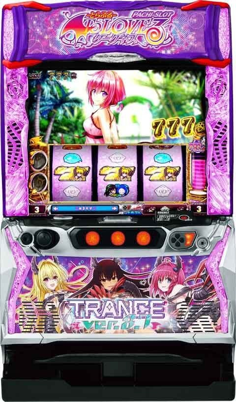
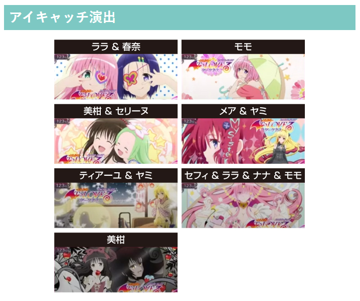
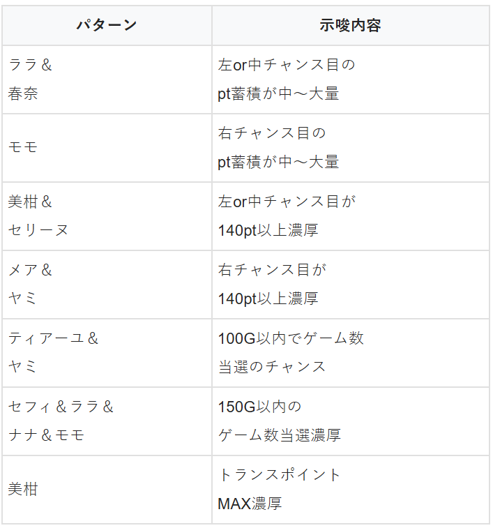
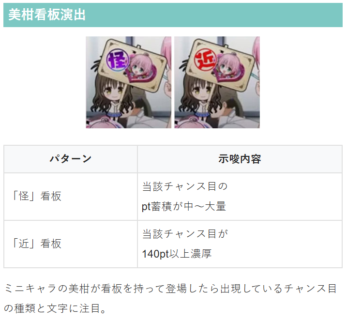
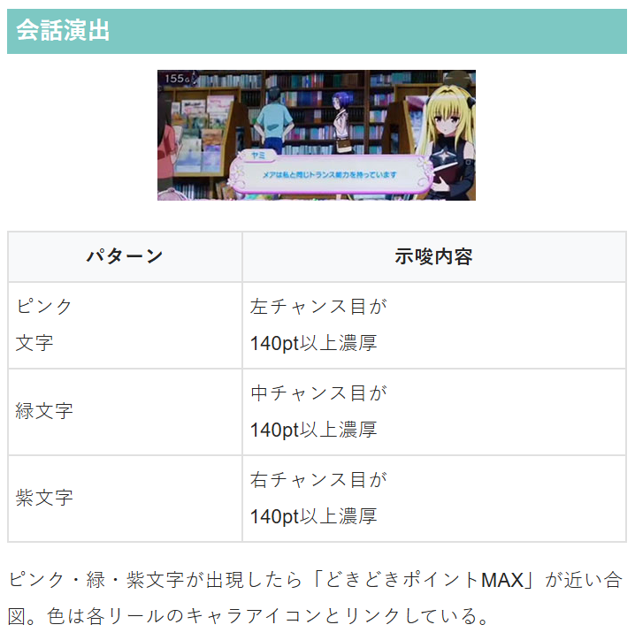

L ToLOVEるダークネス TRANCE ver.8.7

【天井情報】
999G＋α消化でボーナスに当選
設定変更時は650G＋αに短縮
【リセット判別】
不明
【有利区間について】
差枚数やエンディングで有利区間がリセットされるともぐもぐたい焼きタイムを経由してハーレムモードに突入
※通常時は順押しを推奨。変速押しやハサミ打ちもNGなので要注意。
※一旦は前作同様の狙い方で良さそう？
狙い目
【リセット狙い】
130Gから
CZ未当選の場合 90Gから
【ゲーム数天井狙い】
駆け抜け後以外 400Gから
駆け抜け後 280G or 370G から
天井or650ゾーン当選 ＆ 駆け抜け後以外 280Gから
天井or650ゾーン当選 ＆ 駆け抜け後 80Gから
朝一天井駆け抜け後 80Gから
※前作時と同様に導入初期は天井or650ゾーン当選後が甘く出てます。前作同様に内部CZポイントの影響が強い様ならボーダー上げた方が良さそう。狙い目は前作同様CZの影響が強い事を想定してます。
※前作よりCZの影響が弱い様なら期待値表に近い狙い目が良いと思います。例えば、看板の示唆やアイキャッチが前作に比べ出にくくなってるや、前作より250や650ゾーンが強化されてる等。
【ゾーン狙い】
不明
【一撃枚数別狙い】
前作同様な感じで狙えそう？以下は前作の狙い方手順を引用。
枚数引継ぎ含め、通常STは1500枚以上、もぐもぐたい焼き後は1800枚以上で有利切れしてもぐもぐたい焼きタイムに突入。
狙い方のパターンは2種類
① 即やめ台を夕方ステージ消化。何かしらCZの示唆が出たら100Gの発明品チャンス+夕方ステージまで。または80Gから発明品チャンス+夕方ステージ消化まで。
②即やめ台を100Gの発明品チャンス+夕方ステージ消化まで。
※どちらもCZまで近そうなら200G+αまで続行。
・もぐもぐたい焼き後
一撃1000-1500枚後 ①手順
一撃1500枚以上後 ②手順
・非もぐもぐたい焼き後
一撃1300枚以上 ①手順
【有利区間関連狙い】
不明
やめ時
ST終了後、1G回して液晶左のチャンス目対応キャラが光っていないか確認してやめ
※前作同様で良さそう
その他




参考元
かめとうさぎのパチスロブログ
基本情報
- メーカー: オリンピアエステート
- 機械割: 98.0% 〜 112.0%
- 導入開始日: 2025年05月19日（月）
- ゲーム性概要: ●大人気のL ToLOVEるダークネスが別スペックで登場 ●基本的なゲーム性は前回と一緒 ●ボーナス中の純増が6.6枚から8.7枚/Gにアップ！ ●ハーレムモードへ行きやすくなってトータル的な性能がアップ


打ち方
打ち方・小役
ナビ非発生時は順押しで消化
ナビ非発生時は必ず順押しで消化。ハサミ打ちもNGなので間違えないように注意しておきたい。
解析情報通常時
小役関連
小役確率
| 役 | 確率 |
|---|---|
| リプレイ | 1/16.7 |
| 左チャンス目 | 1/32.0 |
| 中チャンス目 | 1/40.0 |
| 右チャンス目 | 1/68.0 |
| 左＆中ダブルチャンス目 | 1/512.0 |
| 左＆右ダブルチャンス目 | 1/512.0 |
| 中＆右ダブルチャンス目 | 1/512.0 |
| ハーレム目 | 1/5461.3 |
| 共通ベル（ナビなしベル）合算 | 1/8.5 |
| チャンス目合算 | 1/13.0 |
| ナビなし時小役揃い合算 | 1/3.9 |
内部状態関連
高確・超高確率概要
通常時の内部状態は通常＜高確＜超高確の3種類で、滞在状態に応じてチャンス目成立時に獲得するどきどきポイントの量が変化。楽園計画終了時と100Gゲーム消化ごとに必ず高確へ移行する。
高確ゲーム数振り分け
| 契機 | 高確20G | 高確30G |
|---|---|---|
| 楽園計画終了後 | ー | 100% |
| 100G消化時 （100～900G） | 69.9% | 30.1% |
どきどき高確

どきどき高確移行率
| 契機 | 移行率 |
|---|---|
| チャンス目成立 | 19.9% （30G継続） |
チャンス目成立時の一部でどきどき高確へ突入。滞在中はチャンス目成立時に追加で10pt以上を獲得する。
前作との相違点
前作との違いまとめ
| 要素 | 概要 |
|---|---|
| 初当り確率 | 若干重くなったがほぼ同じ （設定6のみ若干アップ） |
| ボーナス中の純増 | 約8.7枚に増加 |
| 打ち方 | ナビなし時は順押し推奨（ハサミもNG） ※前回はハサミ打ちもOKだった 順押しについてはコチラ |
| 枚数決定ゾーン | バランス変更あり 詳細はコチラ |
| 上位ST移行率 | ボーナス3回目からの移行率が大幅アップ 詳細はコチラ |
| ST終了画面 | 設定5を示唆する新画面が追加 詳細はコチラ |
通常時に関しては初当り確率において設定2～5はダウンしたが設定6はアップ。小役確率やCZ関連の性能は前回の『ToLOVEる』と同じなので、ゲーム数消化関連の抽選値が少しだけ違うのではないかと思われる。
ST中のボーナス当選率などは一緒で、ボーナス中の1Gあたりの純増が6.6枚から8.7枚に増加。 ST中の枚数決定ゾーンの比率は少しだけ「ばいんあたっく」が増えて「ぺろぺろちゃんす」と「愛すぷラッシュ」が低下、平均上乗せ枚数もほんの少しだけ減っているが、ボーナス3回目からの上位ST当選率が約50%（前回は約34%）に上がっているため、出玉性能は向上。トータル的に見て前作よりも甘く設計されているようだ。 上位ST中の「ウィスパー演出」の比率が前作よりが高くなっている点にも注目しておきたい（設定差も大きくなった）。
※基本的に上記以外の性能は前回と同じ
前回の『 L ToLOVEるダークネス』はコチラ
チャンス目
チャンス目の抽選

チャンス目は左・中・右の3種類（リール左側に表示）があり、各チャンス目を引くごとにポイントが蓄積されていき、 規定ポイントに到達したらチャンス目に対応したCZに発展 。もちろんチャンス目のダブル停止は大量ポイント獲得、トリプル停止時（ハーレム目）は大量ポイント獲得＋αに期待できる。 チャンス目確率は 約1/13 。
［チャンス目のキャラはCZごとに変化］

各チャンス目は2人1組で、右チャンス目ならヤミ→モモというようにCZに当選するごとに入れ替わる。ヒロインが変化するのはあくまで演出なので期待度差などはない。
［どきどきポイント］

チャンス目成立時は、チャンス目の種類に対応したどきどきポイントを1pt以上獲得。150ptに到達するとCZへ突入する。上位の内部状態（通常＜高確＜超高確）に滞在しているほど、大量ポイントを獲得しやすい。
なお、CZ終了後は初期ポイントを多く獲得する場合があるので、早い段階でCZに当選することもある。
どきどきポイント性能
| 項目 | 内容 |
|---|---|
| 獲得契機 | チャンス目成立時（1pt以上） |
| 150pt到達時 | 該当するチャンス目のCZへ |
| リセット契機 | もぐもぐたい焼きタイム終了後 ※STやCZではクリアされない |
内部状態ごとの最低獲得量
| 内部状態 | 内容 |
|---|---|
| 通常 | 1pt以上 |
| 高確（夕方） | 10pt以上 |
| 超高確（夜更け） | 75pt以上 |
通常滞在時は、リール左のキャラアイコンが点灯すると大量ポイント獲得に期待できる。
トランスポイント

CZ失敗時や楽園計画が単発で終了した場合に内部的に蓄積されるポイント。100ptに到達すると次回初当り時にToLOVEるエピソードに当選する。設定変更時は初期ポイント抽選がおこなわれる。
トランスポイント性能
| 項目 | 内容 |
|---|---|
| 獲得契機 | 設定変更時、CZ失敗後、楽園計画単発終了後、 CZ成功確定後の小役抽選 |
| 100pt獲得時の恩恵 | 次回初当りがToLOVEるエピソード （ヤミエピソードの可能性もあり） |
CZ中のトランスポイント加算当選率
CZのきゅんきゅんバルーン成功確定後（7揃い後）の 1G間の成立役 、ときめきスイートの内部的に 成功確定後の成立役 、ぷっちゅんチャレンジの 成功契機役 でトランスポイントの獲得を抽選。 当選率は低いが、この抽選に当選した場合、100ptを獲得するのでToLOVEるエピソード当選が確定する。
ハーレム目はときめきスイートとぷっちゅんチャレンジ中に引けば、成功確定後でなくとも、トランスポイント100pt獲得確定だ。
契機別トランスポイント100pt当選率
| 役 | 当選率 |
|---|---|
| 下記以外 | 0.4% |
| チャンス目1個 | 0.8% |
| ダブルチャンス目 | 1.2% |
| ハーレム目 | 100% |
発明品
発明品解説＆振り分け

規定ゲーム数消化時などに獲得できるアイテムで、基本的にCZを有利に進めるアイテムをゲット。なかにはボーナス直撃が確定するアイテムもある。 100G、300G、500G、700G消化時は発明品チャンスが発生して、発明品を獲得する。
発明品一覧（通常時）
| 発明品 | 効果 |
|---|---|
| にゃんにゃんコピーくん | チャンス目成立時のポイント獲得量が2倍 |
| べとべとランチャーくん | CZのゲーム数減算が一定ゲーム数間ストップ |
| ぴょんぴょんワープくん | ステージ移行（内部状態昇格、前兆移行） |
発明品振り分け
| 発明品 | 振り分け |
|---|---|
| にゃんにゃんコピーくん | 83.6% |
| べとべとランチャーくん | 6.2% |
| ぴょんぴょんワープくん | 10.2% |
CZ
CZ確率
| CZ | 確率 |
|---|---|
| きゅんきゅんバルーン | 1/417.9 |
| ときめきスイート | 1/528.6 |
| ぷっちゅんちゃれんじ | 1/742.4 |
| CZ合算 | 1/177.6 |
きゅんきゅんバルーン解説＆抽選

6G＋α間、小役を揃えるごとにバルーンが昇格。終了時はバルーンの色を参照してボーナス当選をジャッジ。小役成立時はバルーンが昇格するだけでなく、ゲーム数も1G加算されるため、終了間際でも小役さえ連打できれば期待できる。
きゅんきゅんバルーン性能
| 項目 | 内容 |
|---|---|
| 当選契機 | 左チャンス目の規定ポイント到達 |
| 継続ゲーム数 | 6G＋α |
| 当選確率 | 1/417.9 |
| ボーナス期待度 | 約33% |
| 消化中の抽選 | 小役入賞でバルーンが昇格かつCZゲーム数＋1G |
［バルーンの色］

色で期待度を示唆。金まで行けばボーナス濃厚！
［最終ジャッジ］

終了後は逆押しカットインで7が揃えばボーナスだ。
小役揃い時・ランクアップ数振り分け
| 役 | ＋1ランク | ＋2ランク | ＋3ランク | ＋6ランク |
|---|---|---|---|---|
| リプレイ・ベル | 99.6% | 0.4% | ー | ー |
| チャンス目1個停止 | 89.8% | 9.8% | 0.4% | ー |
| ダブルチャンス目 | ー | 50.0% | 50.0% | ー |
| ハーレム目 | ー | ー | ー | 100% |
※ハーレム目は成功確定かつ、かちこちカッチンくんを1個以上ストック
ランク（バルーン色）ごとの成功率
| ランク（色） | 成功率 |
|---|---|
| ランク1（白） | 3.1% |
| ランク2（青） | 4.7% |
| ランク3（緑） | 12.5% |
| ランク4（赤） | 50.0% |
| ランク5（紫） | 80.1% |
| ランク6（金） | 100% |
小役が揃うたびにバルーンの色がランクアップし、最終的なランクで初当りをジャッジ。ランク6（金のバルーン）まで到達すれば楽園計画確定だ。 ランク6到達後は、小役揃い（ランクアップ抽選に当選）のたびにかちこちカッチンくんをストックする。
ときめきスイート解説＆抽選

5G/セットのST型CZで、小役を引くごとにゲーム数がリセット。成立役に応じて進行するコマ数（デートスポット）が変化していく。最終的に終了時（5G間小役非成立）のデートスポットでボーナス当選をジャッジする。
ときめきスイート性能
| 項目 | 内容 |
|---|---|
| 当選契機 | 中チャンス目の規定ポイント到達 |
| 継続ゲーム数 | 5G連続の小役非入賞まで |
| 当選確率 | 1/528.6 |
| ボーナス期待度 | 約40% |
| 消化中の抽選 | 小役入賞で5G再セット |
［砂時計とデートスポット］

［最終ジャッジ］

現在いるデートスポットでボーナス当落をジャッジする。
小役揃い時・マス進行数振り分け
| 進行数 | リプレイ ベル | チャンス目 1個停止 | ダブル チャンス目 | ハーレム目 |
|---|---|---|---|---|
| 1マス | 98.0% | 53.5% | ー | ー |
| 2マス | 1.6% | 37.1% | 50.0% | ー |
| 3マス | 0.4% | 9.4% | 35.9% | ー |
| 4マス | ー | ー | 5.9% | ー |
| 5マス | ー | ー | 1.2% | ー |
| 6マス | ー | ー | 1.2% | ー |
| 7マス | ー | ー | 1.2% | ー |
| 8マス | ー | ー | 4.7% | 100% |
マスの色（デートスポット）ごとの成功率
| 到達マス（色） | 成功率 |
|---|---|
| 1～3マス目（白） | 10.2% |
| 4～5マス目（青） | 33.2% |
| 6～7マス目（緑） | 50.0% |
| 8マス目（赤） | 80.1% |
| 9マス目（金） | 100% |
内部的に失敗時・逆転当選率
| 役 | 当選率 |
|---|---|
| 下記以外 | 0.4% |
| 左チャンス目 | 3.1% |
| 中チャンス目 | 3.9% |
| 右チャンス目 | 4.7% |
| ダブルチャンス目 | 33.2% |
| ハーレム目 | 100% |
到達したマスに応じて成功を抽選。内部的に失敗の場合は最終ジャッジ中の小役で書き換えが抽選される。
ぷっちゅんちゃれんじ解説＆抽選

7G間、成立役に応じて毎ゲームボーナスを抽選する高期待度CZ。プチュンすればボーナス濃厚となる。
ぷっちゅんちゃれんじ性能
| 項目 | 内容 |
|---|---|
| 当選契機 | 右チャンス目の規定ポイント到達 |
| 継続ゲーム数 | 7G固定 |
| 当選確率 | 1/742.4 |
| ボーナス期待度 | 約70% |
| 消化中の抽選 | 毎ゲーム成立役に応じてボーナス抽選 |
［セリフの色で期待度示唆］

赤文字ならチャンス！
［プチュン］

プチュンするタイミングも多彩だ。
ぷっちゅんちゃれんじ・成功当選率
| 役 | 当選率 |
|---|---|
| 下記以外 | 8.6% |
| チャンス目（位置・個数不問） | 100% |
7G間、全役で成功を抽選。チャンス目は成功確定だ。
天井
天井ゲーム数解説
最大天井は999G＋αだが、設定変更後は最大650G＋αに短縮。設定変更時は通常ゲーム数がランダムに加算されるので、さらに早いゲーム数で楽園計画に当選する。 最大天井以外のゲーム数でも楽園計画に当選する可能性があり、 高設定ほどゲーム数契機で当たりやすい 。
解析情報ボーナス時
楽園計画（ST）
ST概要

STは10G＋αで、チャンス目や共通ベルでボーナスを抽選。STはセットごとに攻略対象ヒロインが決まっていて、 ヒロインに対応したチャンス目を引けばボーナスの大チャンス となる。ヒロインはセット継続すると変化していき、3人攻略（3セット継続）で、上位STのハーレムモード移行のチャンス、6人攻略（6セット継続）でハーレムモード突入が確定する。 リプレイ成立時はお友達召喚（ミッション）が抽選される。
楽園計画（ST）性能
| 項目 | 内容 |
|---|---|
| 当選契機 | 初当りボーナス後 |
| 継続ゲーム数 | 10G＋α |
| ボーナス期待度 | 約52% |
| 消化中の抽選 | チャンス目・共通ベルでボーナス抽選、 リプレイでお友達召喚（ミッション）抽選 |
| 備考 | 3セット継続でハーレムモードのチャンス、 6セット継続でハーレムモード確定 |
「モード選択」

左右キーでノーマル、違和感、先告知の3種類から告知モードを選択できる。
［攻略対象のヒロイン］

液晶内にどのチャンス目が期待できるのかが表示されるのでわかりやすい。
［お友達召喚］

ミッション内容をクリアできればボーナス。ミッション内容は全部で5種類で、チャンス目を引いた場合はミッションの内容不問で成功確定となる。
［ヒロインコンプリート］

6人を攻略できればハーレムモードへ！
［通常の楽園計画中］ボーナス当選率
| 役 | 攻略対象キャラ（液晶のキャラ） | ||
|---|---|---|---|
| 役 | ララorナナ | 春菜or唯 | モモorヤミ |
| 左チャンス目 | 69.0% | 35.0% | 43.0% |
| 中チャンス目 | 35.0% | 75.0% | 43.0% |
| 右チャンス目 | 35.0% | 35.0% | 100% |
| ダブルチャンス目 | 100% | 100% | 100% |
| ハーレム目 | 100% | 100% | 100% |
| 共通ベル | 15.9% | 15.9% | 15.9% |
※液晶にいるキャラは左から順に左・中・右チャンス目対応のキャラ ※発明品のピタピタくっつくん所有時はすべてのチャンス目がボーナス確定
［ハーレムモード中］ボーナス当選率
| 役 | 攻略対象キャラ不問 |
|---|---|
| 左チャンス目 | 50.0% |
| 中チャンス目 | 50.0% |
| 右チャンス目 | 100% |
| ダブルチャンス目 | 100% |
| ハーレム目 | 100% |
| ナビなしベル揃い | 15.9% |
ミッション当選率
| お友達召喚システム | リプレイ以外 | リプレイ |
|---|---|---|
| ナシ | ー | 52.1% |
| アリ | 40.2% | 100% |
ボーナス
メモリアルボーナス概要

初当りのメインとなるボーナスで、終了後は必ずSTに突入。消化中はSTを有利に進めるアイテム獲得が抽選される。
メモリアルボーナス性能
| 項目 | 内容 |
|---|---|
| 当選契機 | CZ成功、規定ゲーム数消化時 |
| 継続ゲーム数 | 100枚獲得まで |
| 1Gあたりの純増 | 約8.7枚 |
| ST突入率 | 100% |
| 消化中の抽選 | 発明品獲得を抽選 |
ToLOVEるエピソード概要

ST＋STのVストック1個以上が確定するボーナス。ヤミエピソードならダークネス計画（STゲーム数上乗せ特化ゾーン）移行も確定する。
ToLOVEるエピソード性能
| 項目 | 内容 |
|---|---|
| 当選契機 | メモリアルボーナス（初当り）当選時の一部 |
| 継続ゲーム数 | 20G |
| 1Gあたりの純増 | 約8.7枚 |
| ST突入率 | 100% |
| 消化中の抽選 | 発明品獲得を抽選 |
| 備考 | STのVストック獲得 |
［ヤミエピソード］

とらぶるボーナス概要

ボーナスは枚数管理型で、ボーナス当選後の「枚数決定ゾーン」で枚数を決定。消化中は成立役に応じて「発明品ポイント」が抽選され、 10pt貯まるごとにSTを有利に進める「発明品」をゲット できる。
とらぶるボーナス性能
| 項目 | 内容 |
|---|---|
| 当選契機 | ST中のボーナス |
| 獲得枚数 | 100枚～1600枚（枚数決定ゾーンで決定） |
| 1Gあたりの純増 | 約8.7枚 |
| 消化中の抽選 | 発明品獲得を抽選 |
ボーナス平均獲得枚数
| 状況 | 枚数 |
|---|---|
| ハーレムモード以外 | 375.2枚 |
| ハーレムモード中 | 650.0枚 |
［チャンス目のヒキが重要］

チャンス目は発明品ポイント獲得濃厚だ。
発明品一覧（ST中）
| 発明品 | 効果 |
|---|---|
| お友達召喚システム | リプレイ成立でミッション確定 リプレイ以外でもミッション抽選をおこなう |
| ピタピタくっつくん | チャンス目成立でボーナス確定 |
| かちこちカッチンくん | STのゲーム数減算がストップ |
| モドリスカンク | STが終了した場合にゲーム数を巻き戻し |
| Vストック | ST終了時にボーナス放出 |
| ハーレムモード | ハーレムモード突入 |
とらぶるボーナス中に獲得できるアイテムで、ST巻き戻し（再セット）やボーナスが確定するアイテムも存在。獲得時はまず、Vストック or Vストック以外のどちらになるかを抽選して、Vストック以外が選ばれた場合はとらぶるボーナス中と同様の振り分けで発明品の種類が抽選される。
発明品獲得時の振り分け
| 役 | Vストック | Vストック以外 |
|---|---|---|
| チャンス目1個 | 1.2% | 98.8% |
| ダブルチャンス目 | 12.5% | 87.5% |
| ハーレム目 | 100% | ー |
Vストック以外選択時・発明品振り分け
| 発明品 | 振り分け |
|---|---|
| かちこちカッチンくん | 71.1% |
| お友達召喚システム | 16.0% |
| ピタピタくっつくん | 12.2% |
| モドリスカンク | 0.4% |
| Vストック | 0.4% |
※とらぶるボーナス中と同じ振り分け
［お友達召喚システム］

［ピタピタくっつくん］

［かちこちカッチンくん］

［モドリスカンク］

［Vストック］

［ハーレムモード］

枚数決定ゾーン
［ST中］枚数決定ゾーンの比率
| 枚数決定ゾーン | 比率 |
|---|---|
| ばいんあたっく | 51.0% |
| ウィスパー演出 | 出現の可能性あり |
| ぺろぺろちゃんす | 33.3% |
| 愛すぷラッシュ | 15.1% |
| エピソードボーナス | 0.7% |
※ばいんあたっくの一部でウィスパー演出が発生
［上位ST中］枚数決定ゾーンの比率
ウィスパー演出は、設定4以下の比率は前作とそれほど変わらないが、設定5・6は大きく上昇している（前作では設定5：7.1%、設定6：11.9%）。
枚数決定ゾーンの性能まとめ
| 枚数決定ゾーン | 上乗せ枚数 | 平均上乗せ |
|---|---|---|
| ばいんあたっく | 100枚～1600枚 | 220.1枚 |
| ぺろぺろちゃんす | 300～999枚 | 380.6枚 |
| 愛すぷラッシュ | 500～999枚 | 612.1枚 |
| ウィスパー演出 | 800～1600枚 | 1200.0枚 |
枚数決定ゾーンに関しては若干性能が下がっているが、本当に微差なのでほぼ同じ性能と思ってOK。ウィスパー演出に関しては前回と同じく800枚or1600枚を1:1の比率で獲得できる。
ぺろぺろちゃんす

マロン（犬）が女の子をぺろぺろするほど枚数が増えていくボタン連打タイプの枚数決定ゾーンだ。
ぺろぺろちゃんす性能
| 項目 | 内容 |
|---|---|
| 上乗せ枚数 | 300〜999枚 |
| 平均獲得上乗せ枚数 | 380.6枚 |
［ぺろぺろが続くほど枚数アップ］

愛すぷラッシュ

500枚以上が確定する枚数決定ゾーン。複数のトリガー（バストやヒップ）で枚数を上乗せした後、さらにボタン連打で枚数を上乗せしていくゲーム性となる。
愛すぷラッシュ性能
| 項目 | 内容 |
|---|---|
| 上乗せ枚数 | 500〜999枚 |
| 平均獲得上乗せ枚数 | 612.1枚 |
［トリガーでの上乗せ］

［ボタン連打の上乗せ］

ダークネス計画
ダークネス計画概要

STのゲーム数を上乗せする特化ゾーン。上乗せしたゲーム数を使い切るまでSTの基本ゲーム数は使用されない。もちろんボーナスを引いても、残りゲーム数は次のSTに引き継がれる。
ダークネス計画性能
| 画面 | 示唆 |
|---|---|
| 突入契機 | トランスポイント解放時の一部 |
| 継続ゲーム数 | 5G |
| 消化中の抽選 | 楽園計画のゲーム数加算を抽選 |
| 終了後 | 45Gのエピソードを消化後楽園計画へ |
［毎ゲーム上乗せを抽選］

ハーレムモード（上位ST）
上位ST概要

継続期待度が約80%となるうえ、枚数決定ゾーンが「愛すぷラッシュ」以上となるため、ボーナスの平均枚数が約650枚になる強力な上位ST。エンディングに到達すれば引き戻し確定の「もぐもぐたい焼きタイム」に移行するため、ボーナスを経て再度ハーレムモードに突入する（エンディング未到達でも、もぐもぐたい焼きタイム突入の可能性あり）
ハーレムモード性能
| 項目 | 内容 |
|---|---|
| 当選契機 | 3セット継続時の一部、ST6セット継続時など |
| 継続ゲーム数 | 10G＋α |
| ボーナス期待度 | 約80% |
| 期待獲得枚数 | 3000枚以上 |
| 消化中の抽選 | チャンス目・共通ベルでボーナス抽選、 リプレイでお友達召喚（ミッション）抽選 |
| 備考 | 滞在中のボーナスは平均650枚 |
もぐもぐたい焼きタイム
もぐもぐたい焼きタイム概要

おもにエンディング後に移行する32G間の発明品獲得特化ゾーンで、終了後はボーナス当選確定＝ハーレムモード突入が確約される。
もぐもぐたい焼きタイム性能
| 項目 | 内容 |
|---|---|
| 当選契機 | エンディング到達後など |
| 継続ゲーム数 | 32G |
| 期待獲得枚数 | 3000枚以上 |
| 消化中の抽選 | 高確率で発明品を獲得 |
| 備考 | 終了後はとらぶるボーナスを経由して ハーレムモードへ移行 |
［発明品はボーナス中と共通］

上位ST突入率
ボーナス回数別・上位ST期待度（設定2）
| ボーナス回数 | 期待度 |
|---|---|
| 1回目 | 抽選あり |
| 2回目 | 抽選あり |
| 3回目 | 50.2% |
| 4回目 | 抽選あり |
| 5回目 | 抽選あり |
| 6回目 | 100% |
もちろん今回も6回目のボーナスは上位ST濃厚。3回目のボーナスを引ければ約50%で上位STへ突入する。
ツラヌキ・有利区間
ツラヌキ条件と恩恵
| 項目 | 内容 |
|---|---|
| 条件 | エンディング到達後など |
| 恩恵 | もぐもぐたい焼きタイム突入 もぐもぐたい焼きタイム概要はコチラ |
エンディング到達後は有利区間がリセットされ「もぐもぐたい焼きタイム」へ突入。32G間、発明品を高確率で獲得できるうえ、終了後はボーナスを経てハーレムモードに突入する。
基本・小役関連
ばいんアタック

枚数期待度低めのゾーン。ばいんだけに、ボタン長押しで成功するごとに枚数が倍（倍ん）になっていくゲーム性。ばいんアタックと思いきや、800枚or1600枚が確定する「ウィスパー演出」が発生することもある。
ばいんアタック性能
| 項目 | ウィスパー演出非発生時 | ウィスパー演出発生時 |
|---|---|---|
| 上乗せ枚数 | 100枚～1600枚 | 800枚or1600枚 |
| 平均獲得上乗せ枚数 | 220.1枚 | 1200枚 |
ウィスパー演出発生時の上乗せ枚数振り分け
| 枚数 | 振り分け |
|---|---|
| ＋800枚 | 50.0% |
| ＋1600枚 | 50.0% |
［枚数が倍にアップ］

［ウィスパー演出］

演出情報
通常時
ステージ解説
「昼」

通常ステージ。
「夕暮れ」

高確示唆ステージ。
「夜更け」

超高確示唆ステージ。
どきどきポイント・天井・トランスポイント示唆
「アイキャッチ」

通常時のアイキャッチでは、どきどきポイントの蓄積量や天井到達期待度、トランスポイント量などを示唆する。
「会話演出の文字色」

通常時の会話演出の文字色が変化すれば、対応するどきどきポイントが140pt以上貯まっていることを示唆。ピンク文字は左チャンス目、緑文字は中チャンス目、紫文字は右チャンス目に対応している。
「美柑看板演出の文字」


液晶左に出現する美柑が持つ看板の文字に注目。「怪」ならポイント蓄積期待度中〜大、「近」なら140pt以上蓄積を示唆する。
※画像はキュインちゃんねる@HEIWA(ハルルナ)のものを使用しています
前兆ステージ
［おでかけ］

チャンス目を契機に移行する前兆ステージ。最終的にチャンス目のキャラとデートできればCZに突入する。
［追憶の闇］

ゲーム数消化から突入する前兆ステージ。ラストの連続演出に成功すればボーナスが確定する。
楽園計画（ST）
楽園計画中の裏ボタン別・告知パターン
| 押したボタン | 告知パターン |
|---|---|
| PUSHボタン | ボーナス時の約50%でPUSHボタンが振動 |
| 左右キー | ボーナス時の約75%で告知音が発生 |
| 上下キー | ボーナス時の約75%でランプが消灯 |
| 決定キー | ボーナス時の約99%でボイスが発生 |
レバーON後、第1停止ボタンを押すまでにいずれかのボタンを押すと、ボーナス当選時に専用の告知が発生する可能性あり。決定キー（上下左右キーの右側にある赤いボタン）はほぼボイスが発生するので、実質的には一発告知のような使い方ができる。
楽園計画中の違和感演出一覧
| No. | 演出 |
|---|---|
| 1 | 下パネル点滅 |
| 2 | BGMストップ |
| 3 | 上パネル消灯 |
| 4 | 上部ランプ高速点滅 |
| 5 | 枠ランプ虹 |
| 6 | 全ランプ消灯 |
| 7 | レバーON時にマロンのボイス |
| 8 | レバーON時に各キャラのボイス |
| 9 | 停止音「ばいばいアップくん」 |
| 10 | Vボタン内の赤丸のみ点灯 |
| 11 | Vボタンが一瞬開閉 |
| 12 | PUSHが振動 |
| 13 | パオーン音 |
違和感モード中は上記違和感演出の発生率がアップ。違和感演出自体はノーマルモードでも発生する可能性がある。